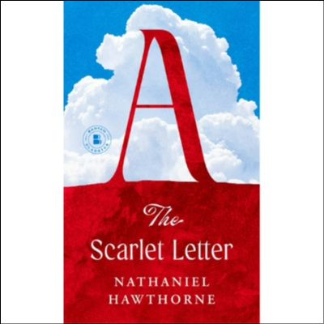
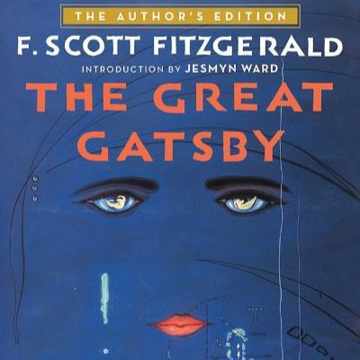

One of the most memorable trips I have ever taken was 2 years ago when my wife and I went to Santorini, Greece. We spent 4 days and 3 nights on the island exploring the beautiful caldera, trying out Greek food, and experiencing the breath taking views that Santorini has to offer.
Spain Restaurant locates in Cranston, RI. It serves Spanish and Mediterranean inspired cuisine. It is my favorite restaurant because the food is amazing, the service is exceptional and the restaurent is calm and quiet. Most importantly, the price is also reasonable.

I really love this house special called filet mignon served with pasta. The filet mignon was soft and tasted very delicious when it is served medium. I enjoy it with a little bit of black pepper and which adds a rich and savory flavor. Sometimes, I like to mix a bit of grated Parmesan into the pasta for extra flavor.
| Book Name | Cover | Author | Summary |
|---|---|---|---|
| The Scarlet Letter |  | Nathaniel Hawthorne | "A young woman, Hester Prynne, has been found guilty of adultery and must wear a scarlet A on her dress as a sign of shame." |
| The Fault in Our Stars | John Green | "Hazel Grace Lancaster (Shailene Woodley), a 16-year-old cancer patient, meets and falls in love with Gus Waters (Ansel Elgort), a similarly afflicted teen from her cancer support group." | |
| First They Killed My Father | Loung Ung | "Loung Ung is 5 years old when the Khmer Rouge assumes power over Cambodia in 1975. They soon begin a four-year reign of terror and genocide in which nearly 2 million Cambodians die. Forced from her family's home in Phnom Penh, Ung is trained as a child soldier while her six siblings are sent to labor camps." | |
| The Great Gatsby |  | F. Scott Fitzgerald | "The extravagantly wealthy Jay Gatsby orients his life around his desire to be reunited with Daisy Buchanan, the love he lost 5 years beforehand and who is now married to a man called Tom." |